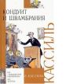

В эту книгу выдающегося мастера слова, одного из зачинателей детской и юношеской литературы Льва Абрамовича Кассиля (1905-1970), вошла известная и очень увлекательная повесть "Кондуит и Швамбрания".